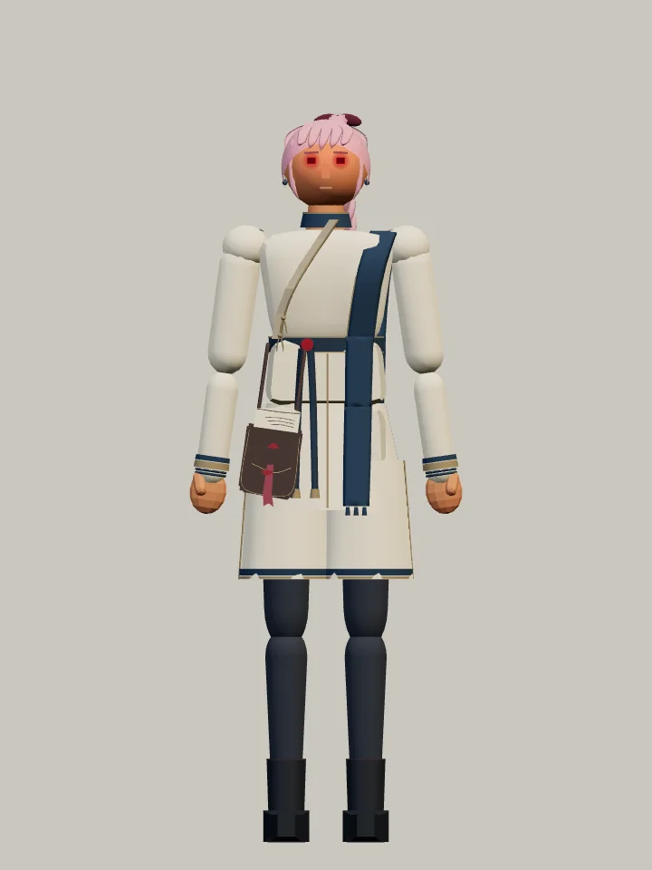
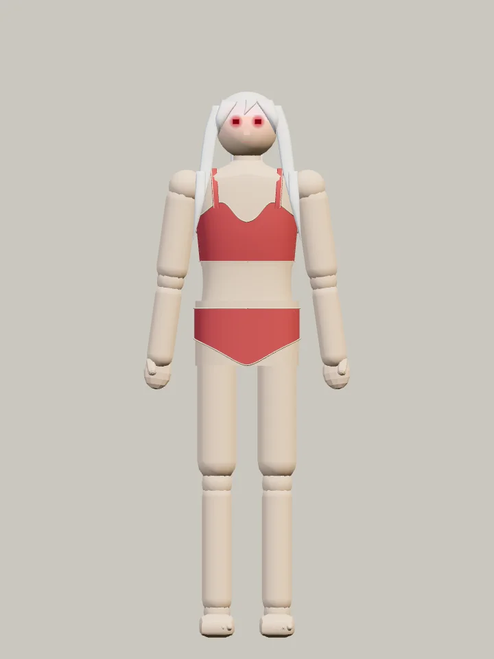
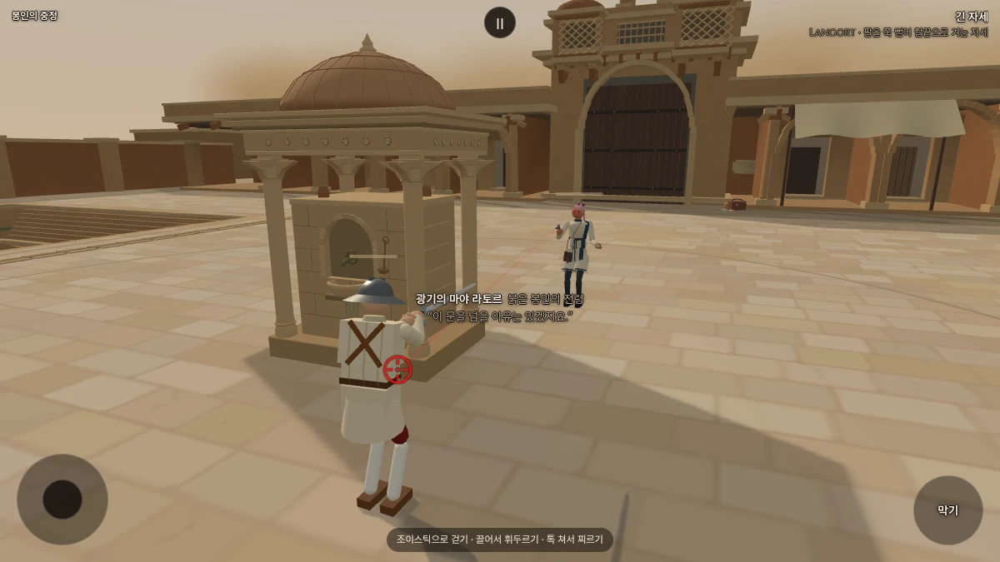
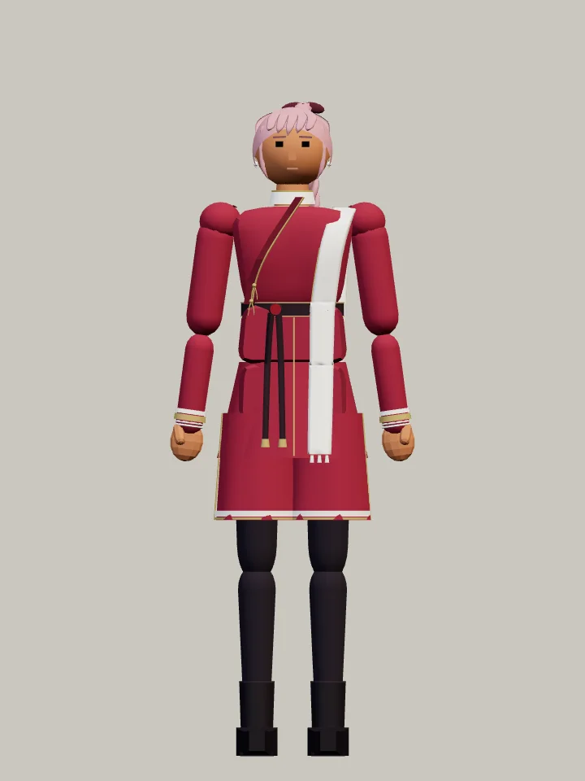
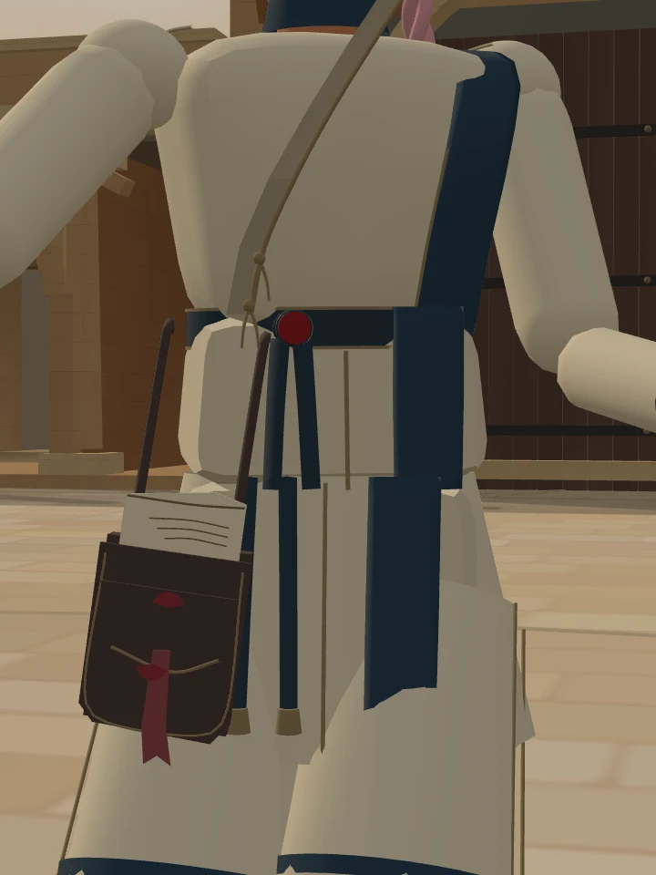
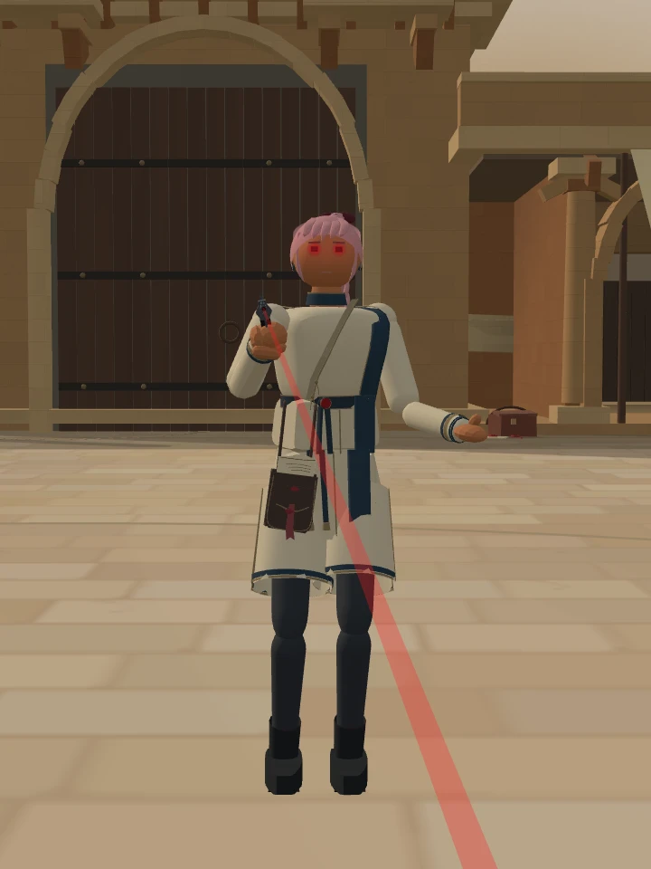
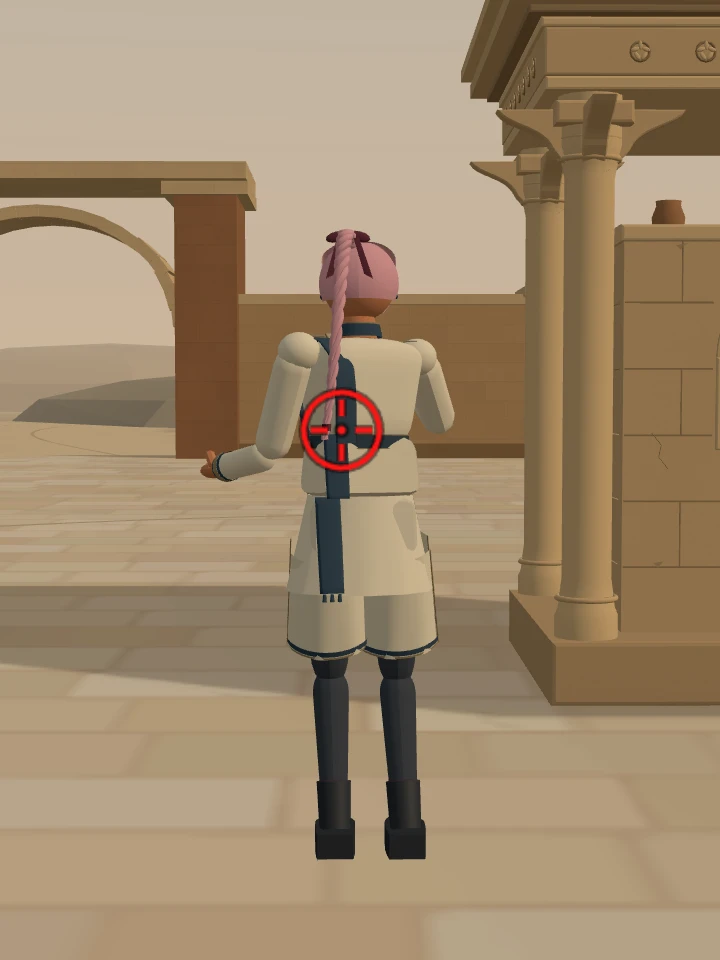
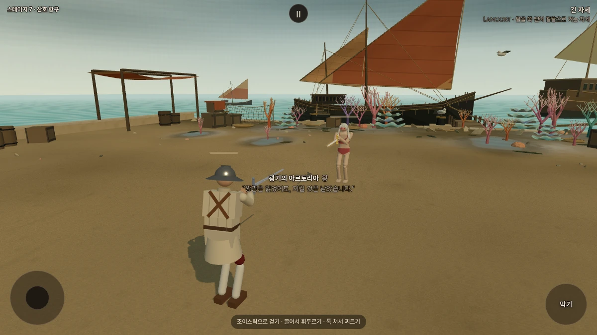
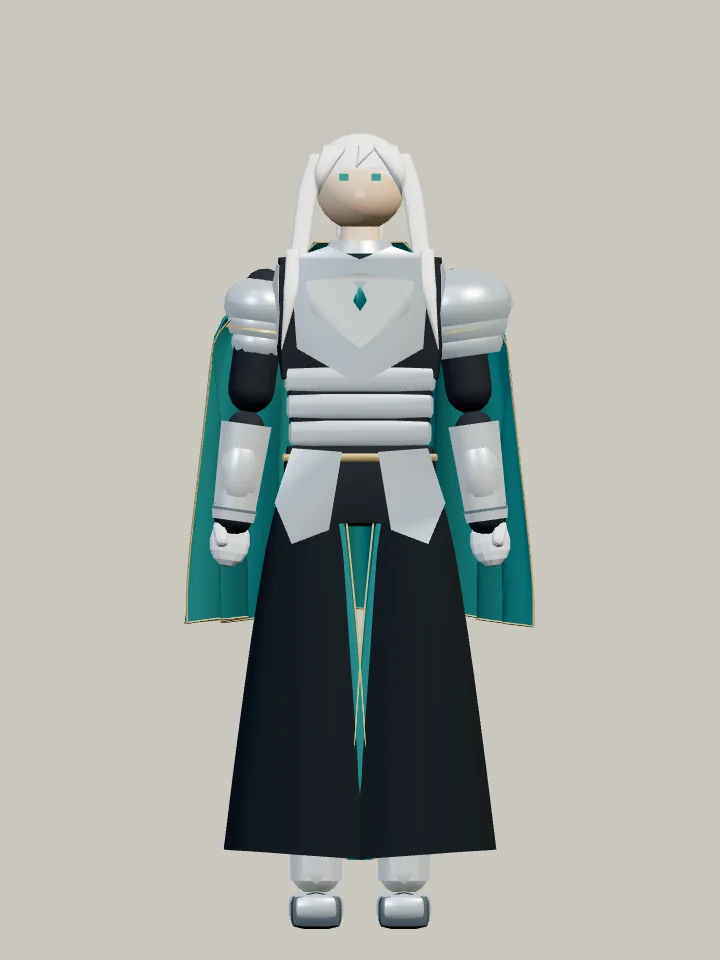

Stillness · 적막
마야와 아르토리아
뜯긴 봉인을 품은 전령.
갑옷을 벗고 해변에 선 왕.
두 얼터의 첫 외형 시안
두 사람의 다른 모습




실제 게임 모델을 같은 조명·축척으로 찍은 별도 관찰 화면입니다. 무기를 숨기고 팔을 내린 자세입니다.
마야 · 뜯긴 봉인
장밋빛 옷을 상아색으로, 흰 두파타를 먹청색으로 바꿨습니다. 허리의 열린 명령서함에는 접힌 명령서와 갈라진 붉은 봉인이 남아 있습니다.

마야 · 기본과 얼터


정면 비교는 동일한 관찰용 조명·카메라·축척입니다.
명령서함과 게임 속 모습





끝내 전하지 못한 명령을, 결국 스스로 열어 보았을까. 기존 사연을 바탕으로 한 외형 제안입니다. 사격과 전투 수치는 그대로입니다.
아르토리아 · 갑옷을 벗은 왕
은발과 엑스칼리버는 그대로. 산호빛 스포츠 비키니에 얇은 크림색 테두리를 두르고, 맨손과 맨발로 섭니다.

아르토리아 · 기본과 얼터


정면 비교는 동일한 관찰용 조명·카메라·축척입니다.


갑옷 방어도 실제로 제거했습니다. 판금의 이동 감속도 사라집니다. 힘·체력·AI·검술은 원래와 같습니다.
복장을 확인하기 위해 기존 산호 항구에서 만나는 검토판입니다. 일반 여정의 상대 배정은 유지합니다.